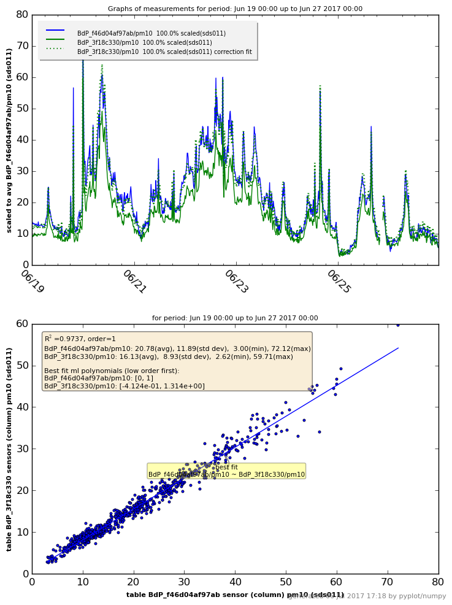
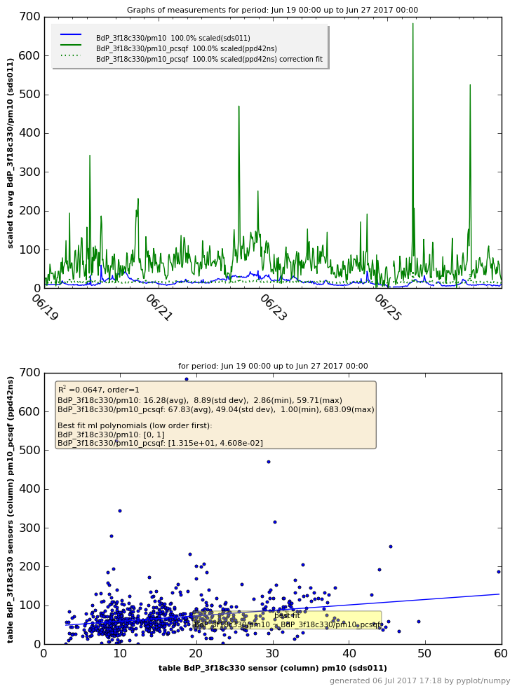
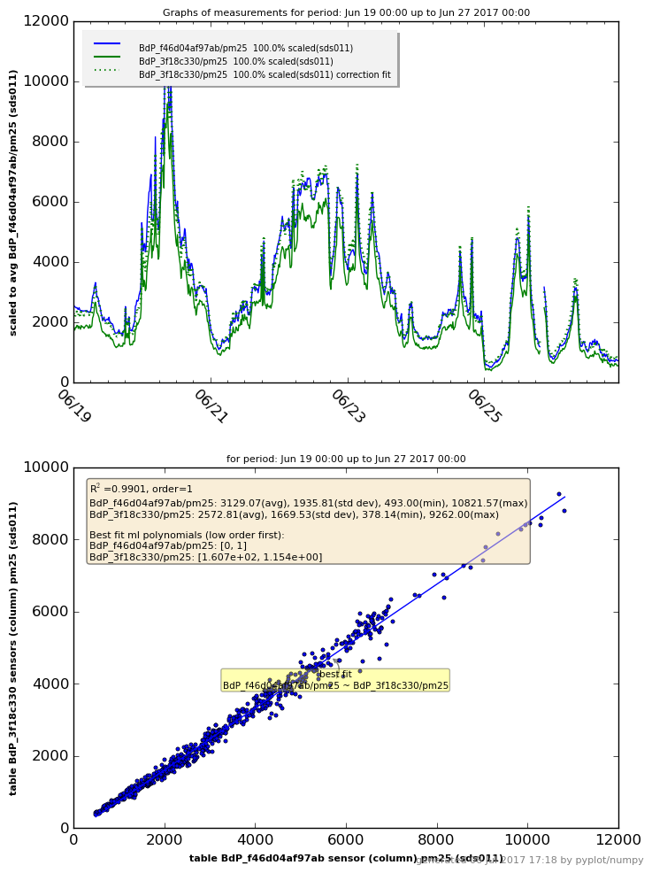
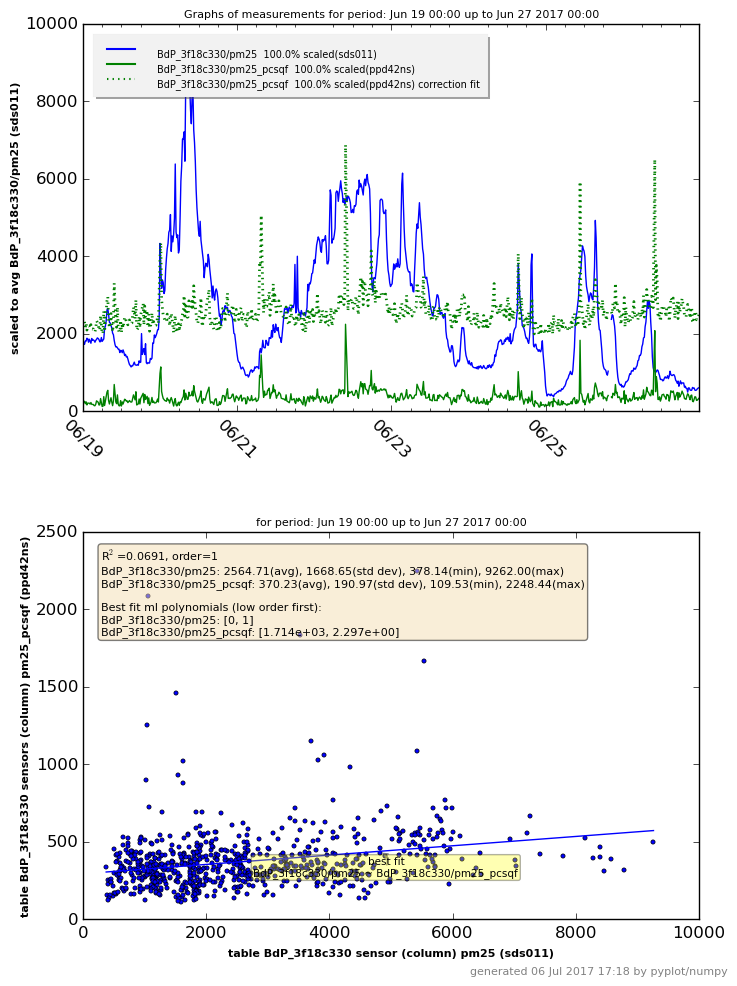
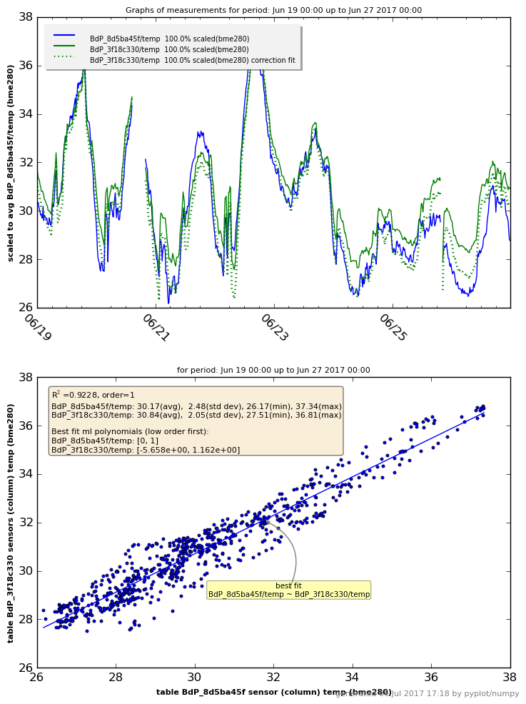
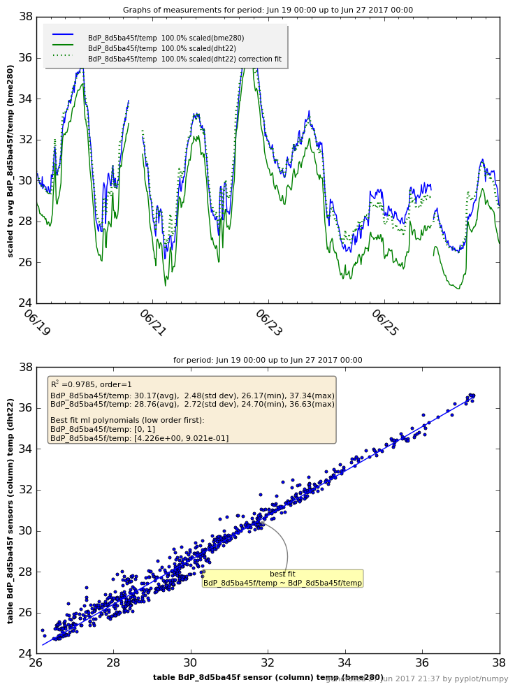
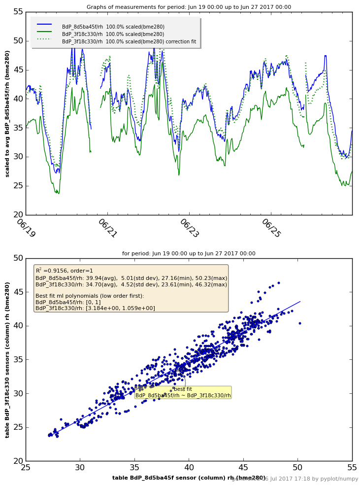
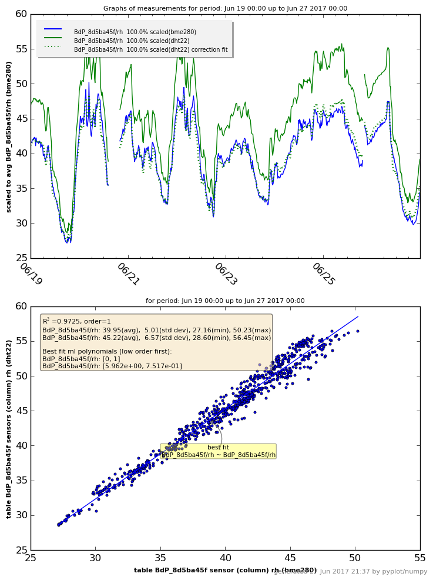
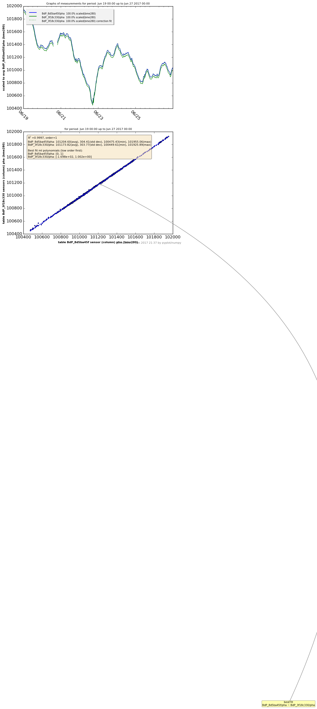

Date of calculationdi jun 27 21:37:10 CEST 2017
From date 2017-06-19 upto 2017-06-27
Regression best fit calculation details for sensor type(s): sds011, dylos
Graphs based on data INFLUX from influxdb on server lunar as user teus:
Auto interval samples is (re)set to 1101 (avg+2*stddev)
Database table BdP_8d5ba45f sensor (column) pm10: 745 db records, deleted 0 NaN records.
Auto interval samples is (re)set to 1280 (avg+2*stddev)
Database table BdP_3f18c330 sensor (column) pm10: 627 db records, deleted 0 NaN records.
Collected 745 values in sample time frame (21m/20s) for the graph.
Samples period: Jun 19 00:00 up to Jun 27 2017 00:00, interval timing 21m:20s.

Data from table/sheet BdP_3f18c330, sensor (column) pm10:
#number 745, avg=16.77, std dev=21.08, min-max=( 2.78, 537.89)
R-squared R² with BdP_3f18c330/pm10: 0.0586
Best fit linear single polynomial regression curve (a0*X^0 + a1*X^1):
BdP_8d5ba45f/pm10 (sds011)-> best fit [ 5.673e+01, 5.328e-01 ]
Statistical summary linear regression for BdP_8d5ba45f/pm10 with ['BdP_3f18c330/pm10']:
| Dep. Variable: | BdP_8d5ba45f/pm10 | R-squared: | 0.059 |
|---|---|---|---|
| Model: | OLS | Adj. R-squared: | 0.057 |
| Method: | Least Squares | F-statistic: | 46.29 |
| Date: | Tue, 27 Jun 2017 | Prob (F-statistic): | 2.10e-11 |
| Time: | 21:37:11 | Log-Likelihood: | -3893.1 |
| No. Observations: | 745 | AIC: | 7790. |
| Df Residuals: | 743 | BIC: | 7799. |
| Df Model: | 1 |
| coef | std err | t | P>|t| | [95.0% Conf. Int.] | |
|---|---|---|---|---|---|
| BdP_3f18c330/pm10 | 56.7272 | 2.110 | 26.889 | 0.000 | 52.586 60.869 |
| Omnibus: | 664.901 | Durbin-Watson: | 0.608 |
|---|---|---|---|
| Prob(Omnibus): | 0.000 | Jarque-Bera (JB): | 42752.036 |
| Skew: | 3.662 | Prob(JB): | 0.00 |
| Kurtosis: | 39.381 | Cond. No. | 34.4 |
Date of calculationdi jun 27 21:37:12 CEST 2017
From date 2017-06-19 upto 2017-06-27
Regression best fit calculation details for sensor type(s): sds011
Graphs based on data INFLUX from influxdb on server lunar as user teus:
Database table BdP_f46d04af97ab sensor (column) pm10: 760 db records, deleted 0 NaN records.
Auto interval samples is (re)set to 1098 (avg+2*stddev)
Database table BdP_3f18c330 sensor (column) pm10: 765 db records, deleted 0 NaN records.
Collected 760 values in sample time frame (18m/18s) for the graph.
Samples period: Jun 19 00:00 up to Jun 27 2017 00:00, interval timing 18m:18s.
Data from table/sheet BdP_3f18c330, sensor (column) pm10:
#number 760, avg=17.00, std dev=25.85, min-max=( 2.62, 685.43)
R-squared R² with BdP_3f18c330/pm10: 0.1285
Best fit linear single polynomial regression curve (a0*X^0 + a1*X^1):
BdP_f46d04af97ab/pm10 (sds011)-> best fit [ 1.798e+01, 1.649e-01 ]
Statistical summary linear regression for BdP_f46d04af97ab/pm10 with ['BdP_3f18c330/pm10']:
| Dep. Variable: | BdP_f46d04af97ab/pm10 | R-squared: | 0.129 |
|---|---|---|---|
| Model: | OLS | Adj. R-squared: | 0.127 |
| Method: | Least Squares | F-statistic: | 111.8 |
| Date: | Tue, 27 Jun 2017 | Prob (F-statistic): | 1.80e-24 |
| Time: | 21:37:13 | Log-Likelihood: | -2907.9 |
| No. Observations: | 760 | AIC: | 5820. |
| Df Residuals: | 758 | BIC: | 5829. |
| Df Model: | 1 |
| coef | std err | t | P>|t| | [95.0% Conf. Int.] | |
|---|---|---|---|---|---|
| BdP_3f18c330/pm10 | 17.9792 | 0.483 | 37.250 | 0.000 | 17.032 18.927 |
| Omnibus: | 151.012 | Durbin-Watson: | 0.394 |
|---|---|---|---|
| Prob(Omnibus): | 0.000 | Jarque-Bera (JB): | 3253.199 |
| Skew: | -0.205 | Prob(JB): | 0.00 |
| Kurtosis: | 13.127 | Cond. No. | 37.0 |
Date of calculationdi jun 27 21:37:13 CEST 2017
From date 2017-06-19 upto 2017-06-27
Regression best fit calculation details for sensor type(s): ppd42ns
Graphs based on data INFLUX from influxdb on server lunar as user teus:
Auto interval samples is (re)set to 1315 (avg+2*stddev)
Database table BdP_3f18c330 sensor (column) pm10_pcsqf: 736 db records, deleted 0 NaN records.
Auto interval samples is (re)set to 2066 (minimal- 50% -maximal)
Database table BdP_33040d54 sensor (column) pm10_pcsqf: 455 db records, deleted 0 NaN records.
Collected 674 values in sample time frame (34m/26s) for the graph.
Skipped 62 db records, could not find any value(s) in same sample interval.
Samples period: Jun 19 00:00 up to Jun 27 2017 00:00, interval timing 34m:26s.

Data from table/sheet BdP_33040d54, sensor (column) pm10_pcsqf:
#number 674, avg=36.92, std dev=21.78, min-max=( 1.00, 149.50)
R-squared R² with BdP_33040d54/pm10_pcsqf: 0.0613
Best fit linear single polynomial regression curve (a0*X^0 + a1*X^1):
BdP_3f18c330/pm10_pcsqf (ppd42ns)-> best fit [ 4.587e+01, 6.460e-01 ]
Statistical summary linear regression for BdP_3f18c330/pm10_pcsqf with ['BdP_33040d54/pm10_pcsqf']:
| Dep. Variable: | BdP_3f18c330/pm10_pcsqf | R-squared: | 0.061 |
|---|---|---|---|
| Model: | OLS | Adj. R-squared: | 0.060 |
| Method: | Least Squares | F-statistic: | 43.86 |
| Date: | Tue, 27 Jun 2017 | Prob (F-statistic): | 7.23e-11 |
| Time: | 21:37:14 | Log-Likelihood: | -3658.2 |
| No. Observations: | 674 | AIC: | 7320. |
| Df Residuals: | 672 | BIC: | 7329. |
| Df Model: | 1 |
| coef | std err | t | P>|t| | [95.0% Conf. Int.] | |
|---|---|---|---|---|---|
| BdP_33040d54/pm10_pcsqf | 45.8707 | 4.181 | 10.970 | 0.000 | 37.661 54.081 |
| Omnibus: | 838.204 | Durbin-Watson: | 1.539 |
|---|---|---|---|
| Prob(Omnibus): | 0.000 | Jarque-Bera (JB): | 116750.499 |
| Skew: | 6.117 | Prob(JB): | 0.00 |
| Kurtosis: | 66.306 | Cond. No. | 84.4 |
Date of calculationdi jun 27 21:37:15 CEST 2017
From date 2017-06-19 upto 2017-06-27
Regression best fit calculation details for sensor type(s): sds011, ppd42ns
Graphs based on data INFLUX from influxdb on server lunar as user teus:
Auto interval samples is (re)set to 1098 (avg+2*stddev)
Database table BdP_3f18c330 sensor (column) pm10: 765 db records, deleted 0 NaN records.
Auto interval samples is (re)set to 1531 (avg+2*stddev)
Database table BdP_3f18c330 sensor (column) pm10_pcsqf: 610 db records, deleted 0 NaN records.
Collected 750 values in sample time frame (25m/31s) for the graph.
Skipped 15 db records, could not find any value(s) in same sample interval.
Samples period: Jun 19 00:00 up to Jun 27 2017 00:00, interval timing 25m:31s.
Data from table/sheet BdP_3f18c330, sensor (column) pm10_pcsqf:
#number 750, avg=67.83, std dev=49.04, min-max=( 1.00, 683.09)
R-squared R² with BdP_3f18c330/pm10_pcsqf: 0.0149
Best fit linear single polynomial regression curve (a0*X^0 + a1*X^1):
BdP_3f18c330/pm10 (ppd42ns)-> best fit [ 1.277e+01, 6.474e-02 ]
Statistical summary linear regression for BdP_3f18c330/pm10 with ['BdP_3f18c330/pm10_pcsqf']:
| Dep. Variable: | BdP_3f18c330/pm10 | R-squared: | 0.015 |
|---|---|---|---|
| Model: | OLS | Adj. R-squared: | 0.014 |
| Method: | Least Squares | F-statistic: | 11.34 |
| Date: | Tue, 27 Jun 2017 | Prob (F-statistic): | 0.000799 |
| Time: | 21:37:16 | Log-Likelihood: | -3501.7 |
| No. Observations: | 750 | AIC: | 7007. |
| Df Residuals: | 748 | BIC: | 7017. |
| Df Model: | 1 |
| coef | std err | t | P>|t| | [95.0% Conf. Int.] | |
|---|---|---|---|---|---|
| BdP_3f18c330/pm10_pcsqf | 12.7704 | 1.609 | 7.935 | 0.000 | 9.611 15.930 |
| Omnibus: | 1825.536 | Durbin-Watson: | 1.798 |
|---|---|---|---|
| Prob(Omnibus): | 0.000 | Jarque-Bera (JB): | 10815377.556 |
| Skew: | 22.879 | Prob(JB): | 0.00 |
| Kurtosis: | 589.514 | Cond. No. | 143. |
Date of calculationdi jun 27 21:37:17 CEST 2017
From date 2017-06-19 upto 2017-06-27
Regression best fit calculation details for sensor type(s): sds011, dylos
Graphs based on data INFLUX from influxdb on server lunar as user teus:
Auto interval samples is (re)set to 1101 (avg+2*stddev)
Database table BdP_8d5ba45f sensor (column) pm25: 745 db records, deleted 0 NaN records.
Auto interval samples is (re)set to 1280 (avg+2*stddev)
Database table BdP_3f18c330 sensor (column) pm25: 627 db records, deleted 0 NaN records.
Collected 745 values in sample time frame (21m/20s) for the graph.
Samples period: Jun 19 00:00 up to Jun 27 2017 00:00, interval timing 21m:20s.

Data from table/sheet BdP_3f18c330, sensor (column) pm25:
#number 745, avg=2590.21, std dev=2049.22, min-max=(390.33, 34618.44)
R-squared R² with BdP_3f18c330/pm25: 0.3966
Best fit linear single polynomial regression curve (a0*X^0 + a1*X^1):
BdP_8d5ba45f/pm25 (sds011)-> best fit [ 3.840e+02, 1.040e-01 ]
Statistical summary linear regression for BdP_8d5ba45f/pm25 with ['BdP_3f18c330/pm25']:
| Dep. Variable: | BdP_8d5ba45f/pm25 | R-squared: | 0.397 |
|---|---|---|---|
| Model: | OLS | Adj. R-squared: | 0.396 |
| Method: | Least Squares | F-statistic: | 488.3 |
| Date: | Tue, 27 Jun 2017 | Prob (F-statistic): | 1.46e-83 |
| Time: | 21:37:17 | Log-Likelihood: | -5208.2 |
| No. Observations: | 745 | AIC: | 1.042e+04 |
| Df Residuals: | 743 | BIC: | 1.043e+04 |
| Df Model: | 1 |
| coef | std err | t | P>|t| | [95.0% Conf. Int.] | |
|---|---|---|---|---|---|
| BdP_3f18c330/pm25 | 384.0129 | 15.547 | 24.700 | 0.000 | 353.491 414.535 |
| Omnibus: | 382.288 | Durbin-Watson: | 0.655 |
|---|---|---|---|
| Prob(Omnibus): | 0.000 | Jarque-Bera (JB): | 36893.205 |
| Skew: | -1.354 | Prob(JB): | 0.00 |
| Kurtosis: | 37.368 | Cond. No. | 5.32e+03 |
Date of calculationdi jun 27 21:37:18 CEST 2017
From date 2017-06-19 upto 2017-06-27
Regression best fit calculation details for sensor type(s): sds011
Graphs based on data INFLUX from influxdb on server lunar as user teus:
Database table BdP_f46d04af97ab sensor (column) pm25: 760 db records, deleted 0 NaN records.
Auto interval samples is (re)set to 1098 (avg+2*stddev)
Database table BdP_3f18c330 sensor (column) pm25: 765 db records, deleted 0 NaN records.
Collected 760 values in sample time frame (18m/18s) for the graph.
Samples period: Jun 19 00:00 up to Jun 27 2017 00:00, interval timing 18m:18s.
Data from table/sheet BdP_3f18c330, sensor (column) pm25:
#number 760, avg=2624.21, std dev=2228.70, min-max=(378.14, 43334.57)
R-squared R² with BdP_3f18c330/pm25: 0.5856
Best fit linear single polynomial regression curve (a0*X^0 + a1*X^1):
BdP_f46d04af97ab/pm25 (sds011)-> best fit [ 1.385e+03, 6.647e-01 ]
Statistical summary linear regression for BdP_f46d04af97ab/pm25 with ['BdP_3f18c330/pm25']:
| Dep. Variable: | BdP_f46d04af97ab/pm25 | R-squared: | 0.586 |
|---|---|---|---|
| Model: | OLS | Adj. R-squared: | 0.585 |
| Method: | Least Squares | F-statistic: | 1071. |
| Date: | Tue, 27 Jun 2017 | Prob (F-statistic): | 3.80e-147 |
| Time: | 21:37:19 | Log-Likelihood: | -6495.5 |
| No. Observations: | 760 | AIC: | 1.300e+04 |
| Df Residuals: | 758 | BIC: | 1.300e+04 |
| Df Model: | 1 |
| coef | std err | t | P>|t| | [95.0% Conf. Int.] | |
|---|---|---|---|---|---|
| BdP_3f18c330/pm25 | 1384.8154 | 69.921 | 19.805 | 0.000 | 1247.553 1522.078 |
| Omnibus: | 1316.924 | Durbin-Watson: | 1.166 |
|---|---|---|---|
| Prob(Omnibus): | 0.000 | Jarque-Bera (JB): | 1613914.366 |
| Skew: | -10.770 | Prob(JB): | 0.00 |
| Kurtosis: | 227.726 | Cond. No. | 5.32e+03 |
Date of calculationdi jun 27 21:37:20 CEST 2017
From date 2017-06-19 upto 2017-06-27
Regression best fit calculation details for sensor type(s): ppd42ns
Graphs based on data INFLUX from influxdb on server lunar as user teus:
Auto interval samples is (re)set to 1032 (avg+2*stddev)
Database table BdP_3f18c330 sensor (column) pm25_pcsqf: 766 db records, deleted 0 NaN records.
Database table BdP_33040d54 sensor (column) pm25_pcsqf: 663 db records, deleted 0 NaN records.
Collected 759 values in sample time frame (17m/12s) for the graph.
Skipped 7 db records, could not find any value(s) in same sample interval.
Samples period: Jun 19 00:00 up to Jun 27 2017 00:00, interval timing 17m:12s.

Data from table/sheet BdP_33040d54, sensor (column) pm25_pcsqf:
#number 759, avg=249.18, std dev=88.37, min-max=(89.44, 932.88)
R-squared R² with BdP_33040d54/pm25_pcsqf: 0.2998
Best fit linear single polynomial regression curve (a0*X^0 + a1*X^1):
BdP_3f18c330/pm25_pcsqf (ppd42ns)-> best fit [ 6.191e+01, 1.235e+00 ]
Statistical summary linear regression for BdP_3f18c330/pm25_pcsqf with ['BdP_33040d54/pm25_pcsqf']:
| Dep. Variable: | BdP_3f18c330/pm25_pcsqf | R-squared: | 0.300 |
|---|---|---|---|
| Model: | OLS | Adj. R-squared: | 0.299 |
| Method: | Least Squares | F-statistic: | 324.2 |
| Date: | Tue, 27 Jun 2017 | Prob (F-statistic): | 1.35e-60 |
| Time: | 21:37:20 | Log-Likelihood: | -4960.5 |
| No. Observations: | 759 | AIC: | 9925. |
| Df Residuals: | 757 | BIC: | 9934. |
| Df Model: | 1 |
| coef | std err | t | P>|t| | [95.0% Conf. Int.] | |
|---|---|---|---|---|---|
| BdP_33040d54/pm25_pcsqf | 61.9123 | 18.134 | 3.414 | 0.001 | 26.312 97.512 |
| Omnibus: | 844.760 | Durbin-Watson: | 1.454 |
|---|---|---|---|
| Prob(Omnibus): | 0.000 | Jarque-Bera (JB): | 72151.860 |
| Skew: | 5.255 | Prob(JB): | 0.00 |
| Kurtosis: | 49.594 | Cond. No. | 791. |
Date of calculationdi jun 27 21:37:21 CEST 2017
From date 2017-06-19 upto 2017-06-27
Regression best fit calculation details for sensor type(s): sds011, ppd42ns
Graphs based on data INFLUX from influxdb on server lunar as user teus:
Auto interval samples is (re)set to 1098 (avg+2*stddev)
Database table BdP_3f18c330 sensor (column) pm25: 765 db records, deleted 0 NaN records.
Auto interval samples is (re)set to 1276 (avg+2*stddev)
Database table BdP_3f18c330 sensor (column) pm25_pcsqf: 629 db records, deleted 0 NaN records.
Collected 765 values in sample time frame (21m/16s) for the graph.
Samples period: Jun 19 00:00 up to Jun 27 2017 00:00, interval timing 21m:16s.
Data from table/sheet BdP_3f18c330, sensor (column) pm25_pcsqf:
#number 765, avg=370.23, std dev=190.97, min-max=(109.53, 2248.44)
R-squared R² with BdP_3f18c330/pm25_pcsqf: 0.0376
Best fit linear single polynomial regression curve (a0*X^0 + a1*X^1):
BdP_3f18c330/pm25 (ppd42ns)-> best fit [ 1.780e+03, 2.258e+00 ]
Statistical summary linear regression for BdP_3f18c330/pm25 with ['BdP_3f18c330/pm25_pcsqf']:
| Dep. Variable: | BdP_3f18c330/pm25 | R-squared: | 0.038 |
|---|---|---|---|
| Model: | OLS | Adj. R-squared: | 0.036 |
| Method: | Least Squares | F-statistic: | 29.78 |
| Date: | Tue, 27 Jun 2017 | Prob (F-statistic): | 6.56e-08 |
| Time: | 21:37:22 | Log-Likelihood: | -6967.1 |
| No. Observations: | 765 | AIC: | 1.394e+04 |
| Df Residuals: | 763 | BIC: | 1.395e+04 |
| Df Model: | 1 |
| coef | std err | t | P>|t| | [95.0% Conf. Int.] | |
|---|---|---|---|---|---|
| BdP_3f18c330/pm25_pcsqf | 1779.8030 | 172.380 | 10.325 | 0.000 | 1441.408 2118.198 |
| Omnibus: | 1195.943 | Durbin-Watson: | 0.890 |
|---|---|---|---|
| Prob(Omnibus): | 0.000 | Jarque-Bera (JB): | 800252.058 |
| Skew: | 8.879 | Prob(JB): | 0.00 |
| Kurtosis: | 160.450 | Cond. No. | 909. |
Date of calculationdi jun 27 21:37:23 CEST 2017
From date 2017-06-19 upto 2017-06-27
Regression best fit calculation details for sensor type(s): bme280
Graphs based on data INFLUX from influxdb on server lunar as user teus:
Auto interval samples is (re)set to 1113 (avg+2*stddev)
Database table BdP_8d5ba45f sensor (column) temp: 743 db records, deleted 0 NaN records.
Auto interval samples is (re)set to 1294 (avg+2*stddev)
Database table BdP_3f18c330 sensor (column) temp: 620 db records, deleted 0 NaN records.
Collected 743 values in sample time frame (21m/34s) for the graph.
Samples period: Jun 19 00:00 up to Jun 27 2017 00:00, interval timing 21m:34s.

Data from table/sheet BdP_3f18c330, sensor (column) temp:
#number 743, avg=30.84, std dev= 2.05, min-max=(27.51, 36.81)
R-squared R² with BdP_3f18c330/temp: 0.9228
Best fit linear single polynomial regression curve (a0*X^0 + a1*X^1):
BdP_8d5ba45f/temp (bme280)-> best fit [ -5.658e+00, 1.162e+00 ]
Statistical summary linear regression for BdP_8d5ba45f/temp with ['BdP_3f18c330/temp']:
| Dep. Variable: | BdP_8d5ba45f/temp | R-squared: | 0.923 |
|---|---|---|---|
| Model: | OLS | Adj. R-squared: | 0.923 |
| Method: | Least Squares | F-statistic: | 8860. |
| Date: | Tue, 27 Jun 2017 | Prob (F-statistic): | 0.00 |
| Time: | 21:37:24 | Log-Likelihood: | -777.50 |
| No. Observations: | 743 | AIC: | 1559. |
| Df Residuals: | 741 | BIC: | 1568. |
| Df Model: | 1 |
| coef | std err | t | P>|t| | [95.0% Conf. Int.] | |
|---|---|---|---|---|---|
| BdP_3f18c330/temp | -5.6579 | 0.382 | -14.830 | 0.000 | -6.407 -4.909 |
| Omnibus: | 12.273 | Durbin-Watson: | 0.144 |
|---|---|---|---|
| Prob(Omnibus): | 0.002 | Jarque-Bera (JB): | 12.401 |
| Skew: | 0.302 | Prob(JB): | 0.00203 |
| Kurtosis: | 3.189 | Cond. No. | 466. |
Date of calculationdi jun 27 21:37:25 CEST 2017
From date 2017-06-19 upto 2017-06-27
Regression best fit calculation details for sensor type(s): bme280, dht22
Graphs based on data INFLUX from influxdb on server lunar as user teus:
Auto interval samples is (re)set to 1113 (avg+2*stddev)
Database table BdP_8d5ba45f sensor (column) temp: 743 db records, deleted 0 NaN records.
Auto interval samples is (re)set to 1297 (avg+2*stddev)
Database table BdP_8d5ba45f sensor (column) temp: 603 db records, deleted 0 NaN records.
Collected 742 values in sample time frame (21m/37s) for the graph.
Skipped 1 db records, could not find any value(s) in same sample interval.
Samples period: Jun 19 00:00 up to Jun 27 2017 00:00, interval timing 21m:37s.

Data from table/sheet BdP_8d5ba45f, sensor (column) temp:
#number 742, avg=28.76, std dev= 2.72, min-max=(24.70, 36.63)
R-squared R² with BdP_8d5ba45f/temp: 0.9785
Best fit linear single polynomial regression curve (a0*X^0 + a1*X^1):
BdP_8d5ba45f/temp (dht22)-> best fit [ 4.226e+00, 9.021e-01 ]
Statistical summary linear regression for BdP_8d5ba45f/temp with ['BdP_8d5ba45f/temp']:
| Dep. Variable: | BdP_8d5ba45f/temp | R-squared: | 0.978 |
|---|---|---|---|
| Model: | OLS | Adj. R-squared: | 0.978 |
| Method: | Least Squares | F-statistic: | 3.364e+04 |
| Date: | Tue, 27 Jun 2017 | Prob (F-statistic): | 0.00 |
| Time: | 21:37:25 | Log-Likelihood: | -301.81 |
| No. Observations: | 742 | AIC: | 607.6 |
| Df Residuals: | 740 | BIC: | 616.8 |
| Df Model: | 1 |
| coef | std err | t | P>|t| | [95.0% Conf. Int.] | |
|---|---|---|---|---|---|
| BdP_8d5ba45f/temp | 4.2262 | 0.142 | 29.746 | 0.000 | 3.947 4.505 |
| Omnibus: | 31.693 | Durbin-Watson: | 0.270 |
|---|---|---|---|
| Prob(Omnibus): | 0.000 | Jarque-Bera (JB): | 38.826 |
| Skew: | -0.433 | Prob(JB): | 3.71e-09 |
| Kurtosis: | 3.710 | Cond. No. | 308. |
Date of calculationdi jun 27 21:37:26 CEST 2017
From date 2017-06-19 upto 2017-06-27
Regression best fit calculation details for sensor type(s): bme280
Graphs based on data INFLUX from influxdb on server lunar as user teus:
Auto interval samples is (re)set to 1113 (avg+2*stddev)
Database table BdP_8d5ba45f sensor (column) temp: 743 db records, deleted 0 NaN records.
Auto interval samples is (re)set to 1294 (avg+2*stddev)
Database table BdP_3f18c330 sensor (column) temp: 620 db records, deleted 0 NaN records.
Collected 743 values in sample time frame (21m/34s) for the graph.
Samples period: Jun 19 00:00 up to Jun 27 2017 00:00, interval timing 21m:34s.
Data from table/sheet BdP_3f18c330, sensor (column) temp:
#number 743, avg=30.84, std dev= 2.05, min-max=(27.51, 36.81)
R-squared R² with BdP_3f18c330/temp: 0.9228
Best fit linear single polynomial regression curve (a0*X^0 + a1*X^1):
BdP_8d5ba45f/temp (bme280)-> best fit [ -5.658e+00, 1.162e+00 ]
Statistical summary linear regression for BdP_8d5ba45f/temp with ['BdP_3f18c330/temp']:
| Dep. Variable: | BdP_8d5ba45f/temp | R-squared: | 0.923 |
|---|---|---|---|
| Model: | OLS | Adj. R-squared: | 0.923 |
| Method: | Least Squares | F-statistic: | 8860. |
| Date: | Tue, 27 Jun 2017 | Prob (F-statistic): | 0.00 |
| Time: | 21:37:27 | Log-Likelihood: | -777.50 |
| No. Observations: | 743 | AIC: | 1559. |
| Df Residuals: | 741 | BIC: | 1568. |
| Df Model: | 1 |
| coef | std err | t | P>|t| | [95.0% Conf. Int.] | |
|---|---|---|---|---|---|
| BdP_3f18c330/temp | -5.6579 | 0.382 | -14.830 | 0.000 | -6.407 -4.909 |
| Omnibus: | 12.273 | Durbin-Watson: | 0.144 |
|---|---|---|---|
| Prob(Omnibus): | 0.002 | Jarque-Bera (JB): | 12.401 |
| Skew: | 0.302 | Prob(JB): | 0.00203 |
| Kurtosis: | 3.189 | Cond. No. | 466. |
Date of calculationdi jun 27 21:37:28 CEST 2017
From date 2017-06-19 upto 2017-06-27
Regression best fit calculation details for sensor type(s): bme280
Graphs based on data INFLUX from influxdb on server lunar as user teus:
Auto interval samples is (re)set to 1113 (avg+2*stddev)
Database table BdP_8d5ba45f sensor (column) rh: 743 db records, deleted 0 NaN records.
Auto interval samples is (re)set to 1294 (avg+2*stddev)
Database table BdP_3f18c330 sensor (column) rh: 620 db records, deleted 0 NaN records.
Collected 743 values in sample time frame (21m/34s) for the graph.
Samples period: Jun 19 00:00 up to Jun 27 2017 00:00, interval timing 21m:34s.

Data from table/sheet BdP_3f18c330, sensor (column) rh:
#number 743, avg=34.70, std dev= 4.52, min-max=(23.61, 46.32)
R-squared R² with BdP_3f18c330/rh: 0.9156
Best fit linear single polynomial regression curve (a0*X^0 + a1*X^1):
BdP_8d5ba45f/rh (bme280)-> best fit [ 3.184e+00, 1.059e+00 ]
Statistical summary linear regression for BdP_8d5ba45f/rh with ['BdP_3f18c330/rh']:
| Dep. Variable: | BdP_8d5ba45f/rh | R-squared: | 0.916 |
|---|---|---|---|
| Model: | OLS | Adj. R-squared: | 0.915 |
| Method: | Least Squares | F-statistic: | 8038. |
| Date: | Tue, 27 Jun 2017 | Prob (F-statistic): | 0.00 |
| Time: | 21:37:28 | Log-Likelihood: | -1332.7 |
| No. Observations: | 743 | AIC: | 2669. |
| Df Residuals: | 741 | BIC: | 2679. |
| Df Model: | 1 |
| coef | std err | t | P>|t| | [95.0% Conf. Int.] | |
|---|---|---|---|---|---|
| BdP_3f18c330/rh | 3.1837 | 0.414 | 7.699 | 0.000 | 2.372 3.996 |
| Omnibus: | 9.798 | Durbin-Watson: | 0.130 |
|---|---|---|---|
| Prob(Omnibus): | 0.007 | Jarque-Bera (JB): | 10.016 |
| Skew: | -0.273 | Prob(JB): | 0.00668 |
| Kurtosis: | 2.843 | Cond. No. | 271. |
Date of calculationdi jun 27 21:37:29 CEST 2017
From date 2017-06-19 upto 2017-06-27
Regression best fit calculation details for sensor type(s): bme280, dht22
Graphs based on data INFLUX from influxdb on server lunar as user teus:
Auto interval samples is (re)set to 1113 (avg+2*stddev)
Database table BdP_8d5ba45f sensor (column) rh: 743 db records, deleted 0 NaN records.
Auto interval samples is (re)set to 1297 (avg+2*stddev)
Database table BdP_8d5ba45f sensor (column) rh: 603 db records, deleted 0 NaN records.
Collected 742 values in sample time frame (21m/37s) for the graph.
Skipped 1 db records, could not find any value(s) in same sample interval.
Samples period: Jun 19 00:00 up to Jun 27 2017 00:00, interval timing 21m:37s.

Data from table/sheet BdP_8d5ba45f, sensor (column) rh:
#number 742, avg=45.22, std dev= 6.57, min-max=(28.60, 56.45)
R-squared R² with BdP_8d5ba45f/rh: 0.9725
Best fit linear single polynomial regression curve (a0*X^0 + a1*X^1):
BdP_8d5ba45f/rh (dht22)-> best fit [ 5.962e+00, 7.517e-01 ]
Statistical summary linear regression for BdP_8d5ba45f/rh with ['BdP_8d5ba45f/rh']:
| Dep. Variable: | BdP_8d5ba45f/rh | R-squared: | 0.973 |
|---|---|---|---|
| Model: | OLS | Adj. R-squared: | 0.972 |
| Method: | Least Squares | F-statistic: | 2.619e+04 |
| Date: | Tue, 27 Jun 2017 | Prob (F-statistic): | 0.00 |
| Time: | 21:37:30 | Log-Likelihood: | -914.52 |
| No. Observations: | 742 | AIC: | 1833. |
| Df Residuals: | 740 | BIC: | 1842. |
| Df Model: | 1 |
| coef | std err | t | P>|t| | [95.0% Conf. Int.] | |
|---|---|---|---|---|---|
| BdP_8d5ba45f/rh | 5.9620 | 0.212 | 28.093 | 0.000 | 5.545 6.379 |
| Omnibus: | 10.983 | Durbin-Watson: | 0.257 |
|---|---|---|---|
| Prob(Omnibus): | 0.004 | Jarque-Bera (JB): | 11.033 |
| Skew: | 0.291 | Prob(JB): | 0.00402 |
| Kurtosis: | 3.138 | Cond. No. | 318. |
Date of calculationdi jun 27 21:37:31 CEST 2017
From date 2017-06-19 upto 2017-06-27
Regression best fit calculation details for sensor type(s): bme280
Graphs based on data INFLUX from influxdb on server lunar as user teus:
Auto interval samples is (re)set to 1113 (avg+2*stddev)
Database table BdP_8d5ba45f sensor (column) rh: 743 db records, deleted 0 NaN records.
Auto interval samples is (re)set to 1294 (avg+2*stddev)
Database table BdP_3f18c330 sensor (column) rh: 620 db records, deleted 0 NaN records.
Collected 743 values in sample time frame (21m/34s) for the graph.
Samples period: Jun 19 00:00 up to Jun 27 2017 00:00, interval timing 21m:34s.
Data from table/sheet BdP_3f18c330, sensor (column) rh:
#number 743, avg=34.70, std dev= 4.52, min-max=(23.61, 46.32)
R-squared R² with BdP_3f18c330/rh: 0.9156
Best fit linear single polynomial regression curve (a0*X^0 + a1*X^1):
BdP_8d5ba45f/rh (bme280)-> best fit [ 3.184e+00, 1.059e+00 ]
Statistical summary linear regression for BdP_8d5ba45f/rh with ['BdP_3f18c330/rh']:
| Dep. Variable: | BdP_8d5ba45f/rh | R-squared: | 0.916 |
|---|---|---|---|
| Model: | OLS | Adj. R-squared: | 0.915 |
| Method: | Least Squares | F-statistic: | 8038. |
| Date: | Tue, 27 Jun 2017 | Prob (F-statistic): | 0.00 |
| Time: | 21:37:32 | Log-Likelihood: | -1332.7 |
| No. Observations: | 743 | AIC: | 2669. |
| Df Residuals: | 741 | BIC: | 2679. |
| Df Model: | 1 |
| coef | std err | t | P>|t| | [95.0% Conf. Int.] | |
|---|---|---|---|---|---|
| BdP_3f18c330/rh | 3.1837 | 0.414 | 7.699 | 0.000 | 2.372 3.996 |
| Omnibus: | 9.798 | Durbin-Watson: | 0.130 |
|---|---|---|---|
| Prob(Omnibus): | 0.007 | Jarque-Bera (JB): | 10.016 |
| Skew: | -0.273 | Prob(JB): | 0.00668 |
| Kurtosis: | 2.843 | Cond. No. | 271. |
Date of calculationdi jun 27 21:37:32 CEST 2017
From date 2017-06-19 upto 2017-06-27
Regression best fit calculation details for sensor type(s): bme280
Graphs based on data INFLUX from influxdb on server lunar as user teus:
Auto interval samples is (re)set to 1113 (avg+2*stddev)
Database table BdP_8d5ba45f sensor (column) pha: 743 db records, deleted 0 NaN records.
Auto interval samples is (re)set to 1294 (avg+2*stddev)
Database table BdP_3f18c330 sensor (column) pha: 620 db records, deleted 0 NaN records.
Collected 743 values in sample time frame (21m/34s) for the graph.
Samples period: Jun 19 00:00 up to Jun 27 2017 00:00, interval timing 21m:34s.

Data from table/sheet BdP_3f18c330, sensor (column) pha:
#number 743, avg=101173.82, std dev=303.77, min-max=(100449.61, 101925.89)
R-squared R² with BdP_3f18c330/pha: 0.9997
Best fit linear single polynomial regression curve (a0*X^0 + a1*X^1):
BdP_8d5ba45f/pha (bme280)-> best fit [ -1.698e+02, 1.002e+00 ]
Statistical summary linear regression for BdP_8d5ba45f/pha with ['BdP_3f18c330/pha']:
| Dep. Variable: | BdP_8d5ba45f/pha | R-squared: | 1.000 |
|---|---|---|---|
| Model: | OLS | Adj. R-squared: | 1.000 |
| Method: | Least Squares | F-statistic: | 2.926e+06 |
| Date: | Tue, 27 Jun 2017 | Prob (F-statistic): | 0.00 |
| Time: | 21:37:33 | Log-Likelihood: | -2226.4 |
| No. Observations: | 743 | AIC: | 4457. |
| Df Residuals: | 741 | BIC: | 4466. |
| Df Model: | 1 |
| coef | std err | t | P>|t| | [95.0% Conf. Int.] | |
|---|---|---|---|---|---|
| BdP_3f18c330/pha | -169.7726 | 59.261 | -2.865 | 0.004 | -286.112 -53.434 |
| Omnibus: | 228.619 | Durbin-Watson: | 1.118 |
|---|---|---|---|
| Prob(Omnibus): | 0.000 | Jarque-Bera (JB): | 2002.702 |
| Skew: | -1.124 | Prob(JB): | 0.00 |
| Kurtosis: | 10.722 | Cond. No. | 3.37e+07 |